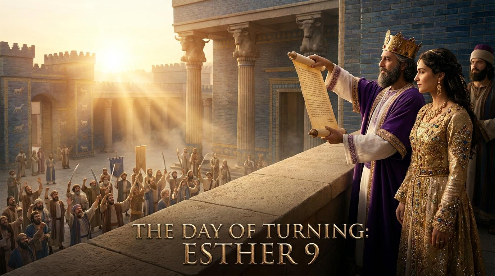

逆轉的恩典：從暗夜絕望到得勝歡呼
在生命中，我們是否曾遇過某些時刻，感覺一切都完了？波斯帝國的律法是不能更改的，滅族的日期已經定下。但就在這死局中，我們看見了神大能的作為。
"就是猶大人的仇敵盼望轄制他們的日子，猶大人反倒轄制恨他們的人。"
這不僅是歷史，更是對我們今日的宣告。當神要幫助你的時候，祂能調動你周圍一切的資源。在最黑暗的日子，請相信神正在編織那張逆轉的網。

從暗夜絕望到得勝歡呼
主阿，我們讚美祢，因祢是掌管歷史與我們生命的主宰。在人看來毫無盼望的盡頭，祢的恩典卻能帶來全盤的逆轉。求祢賜給我們堅定的信心，在面臨仇敵攻擊與環境的艱難時，依然相信祢隱藏的同在。奉主耶穌基督的名求，阿們。
Keyword: 轄制 (Shalat) - 意為掌權，從仇敵手中轉向神子民手中。
關鍵問題：為什麼在絕境中，猶大人的局勢能逆轉？
回答：表面是末底改的高升，本質是神隱藏的護理，神調動外邦官員心意保護祂的子民。
"神護理的作為有時如同隱藏的絲線，我們在當下只看見亂結，但到了最後，卻會發現祂織出了一幅榮耀得勝的掛毯。" —— 查爾斯·司布真
Keyword: 奪取財物 (Bizzah) - 經文強調三次沒有掠奪，展現聖潔的節制。
關鍵問題：為何猶大人放棄合法的戰利品？
回答：為彌補先祖掃羅王的失敗，證明此戰是為了公義生存，非私利報復。
"真正的屬靈爭戰，不在於我們能擊倒多少敵人，而在於我們在勝利的時刻，能否拒絕世界財利的誘惑，保持心中的聖潔。" —— 約翰·加爾文
在生命中，我們是否曾遇過某些時刻，感覺一切都完了？波斯帝國的律法是不能更改的，滅族的日期已經定下。但就在這死局中，我們看見了神大能的作為。
"就是猶大人的仇敵盼望轄制他們的日子，猶大人反倒轄制恨他們的人。"
這不僅是歷史，更是對我們今日的宣告。當神要幫助你的時候，祂能調動你周圍一切的資源。在最黑暗的日子，請相信神正在編織那張逆轉的網。
「感恩與記憶是相連的；忘記神過去的恩惠，就是今日不信的開端。」 — 潘霍華《團契生活》
「上帝有時會把我們逼到絕境，為的是要向我們證明，祂的恩典在最深的黑夜裡依然閃耀。」 — 提摩太·凱勒《與神同行在苦難中》
「信心就是一種漫長的順服，在同一方向上不斷前進。」 — 畢德生《長久順服邁向同一方向》
「在神看不見的護理中，宇宙中沒有任何一次抽籤或偶然是逃過祂至高主權的。」 — 陶恕《渴慕神》